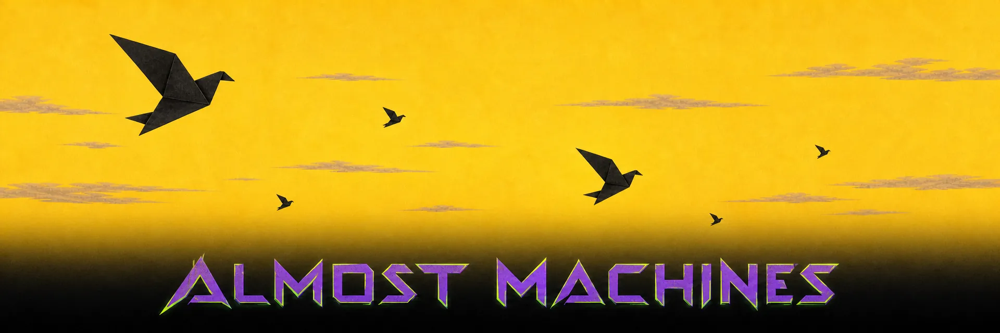

live experiments
Projects
A small launch bay for things I am making, studying, simulating, and sending out into the machinery.

live experiments
A small launch bay for things I am making, studying, simulating, and sending out into the machinery.